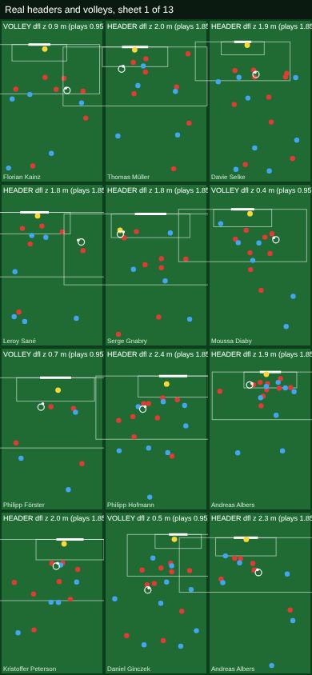
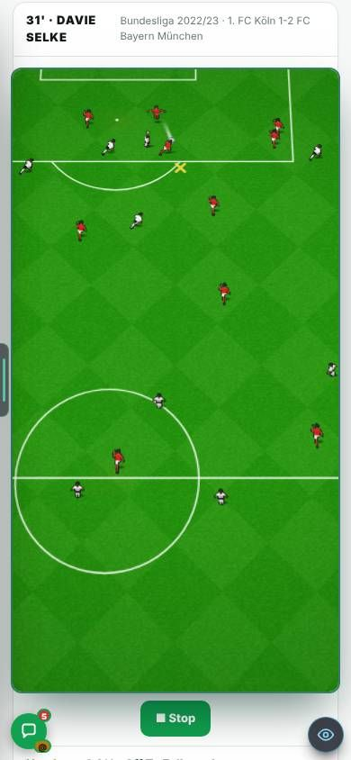
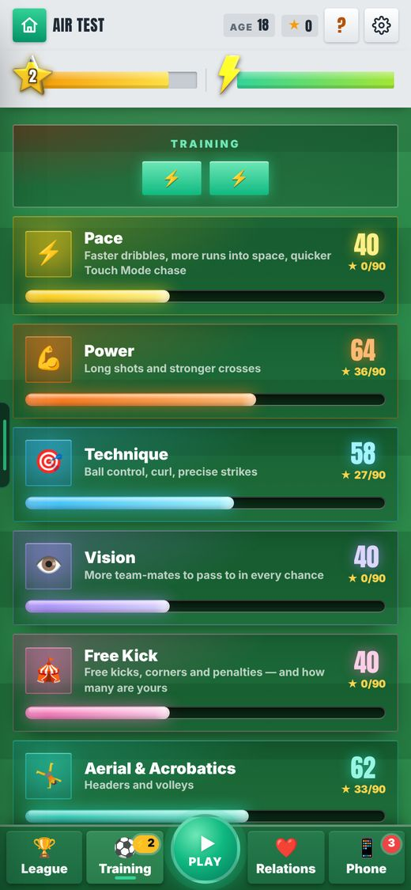
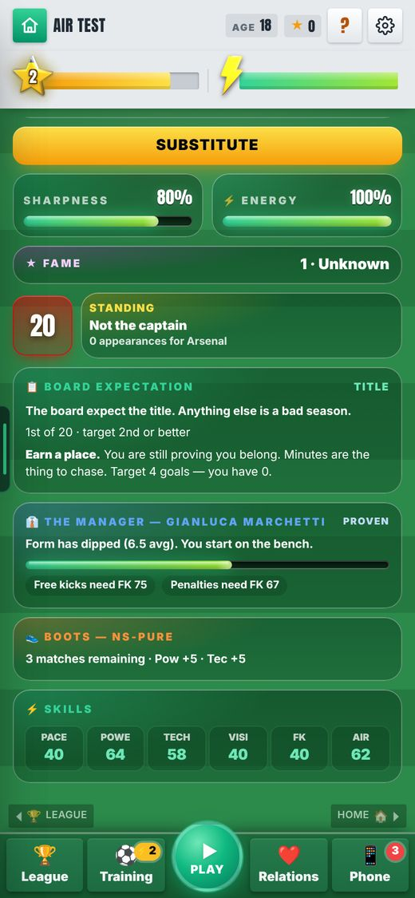
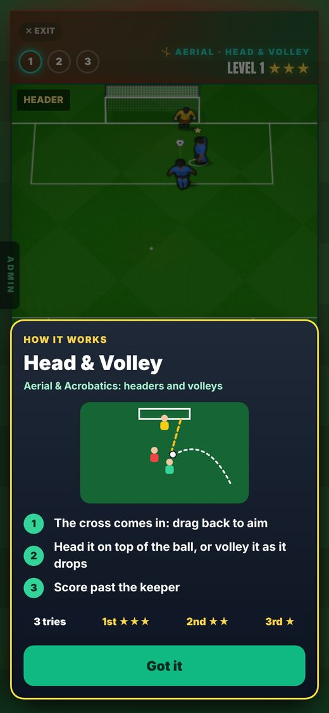
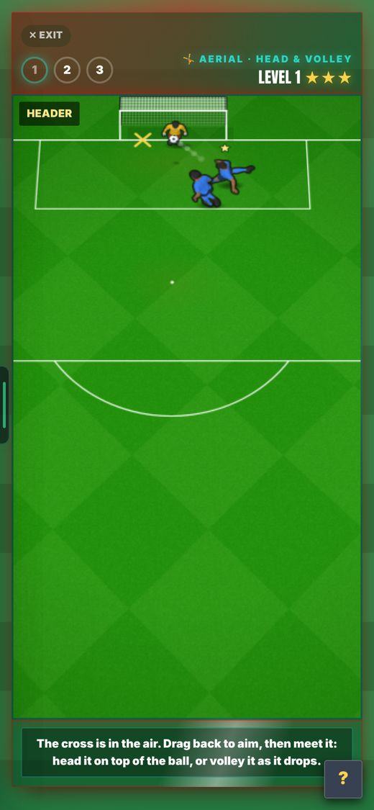
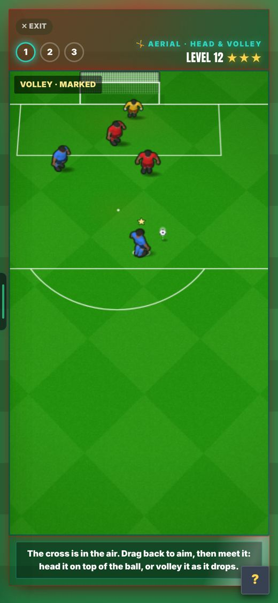

Live: merged to main (e60ef064, 208ba5ae, d47b2b16).
21 Oct 2026. Real moments headers and volleys, and the Aerial & Acrobatics skill with its Head & Volley drill. In Admin → Patch notes this is v0.105h.
Real moments had about 130 air shots (headers and volleys) that played as ground shots.
The moment kept the shot but not the height the ball really had when it was struck, so the game treated it like a shot off the floor.
Real moments now serves 52 real headers and 102 real volleys as true headers and volleys, from the ball's real strike height. 15 overheads are left out until acrobatics are built. With Real moments on you meet about 1 real header per 8 matches and 1 real volley per 5.4 matches.


The close replay of a header or volley ran at 0.4 to 0.6x.
A header or volley is over in a moment. At 0.4 to 0.6x the contact was hard to see.
The close replay now runs at 0.3x. Placed real headed goals also play as headers now.
Numbers passing is not enough for a drawn chance (standing rule, 26 Sep).
A sheet can pass every measure and still show a stranded player or a man behind the keeper.
All 154 were looked at. 7 have a defender nearer the goal line than an off-line keeper. That is real positioning, so they stay.
Headers and volleys had no skill of their own. They leaned on Power and Technique.
A strong long shooter is not automatically good in the air.
A new skill with its own Training card, level screen, Stats "AIR" and a tab in Admin, Training levels. An old save starts at 60% Power + 40% Technique, minimum 40 (Power 64 + Technique 58 gives 62). A new career starts at 40.


Nothing trained the new skill.
A skill needs a drill, like the other five.
Head & Volley: 30 levels (headers on odd levels, volleys on even), on the real engine, 3 tries, 30 energy. A cross comes in, you drag back to aim, then head it or volley it past the keeper. First try 3 stars, second 2, third 1.



Aerial had no effect on goals.
The skill has to matter or training it is pointless.
Goals per 100 chances at Aerial 30 / 60 / 90: headers 20.8 / 25.4 / 31.4 (before 21.2 / 25.4 / 32.5), volleys 25.0 / 28.3 / 31.8 (before 23.8 / 28.3 / 26.3). The volley curve no longer falls at 90.
Aerial changes the drill and the numbers above, but a real match ignores it.
It needs one edit to a match file, which waits for Harry's Allow (engine rule RUL-ENG-001).
Takes effect after that edit. Not changed yet.
Real headers all use one height. A height of 1.5 to 2.6 m is built but switched off.
It needs a match-file change and a scoring measurement first. In a small test elite headers went from 34.7% to 50%, too big a jump to switch on blind.
Stays off until measured.
Aerial does not count towards the star rating or Star Points.
Left out on purpose for now. Not changed.
15 real overhead kicks are left out of Real moments.
They return when acrobatics are built.